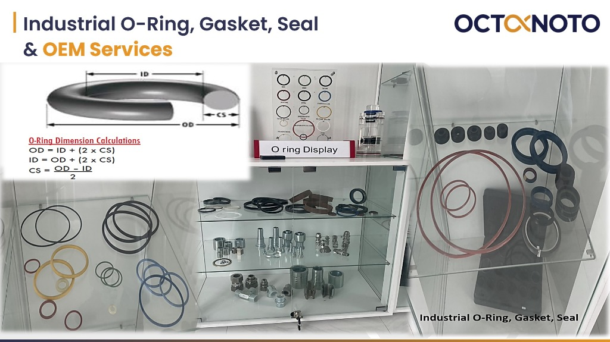

โอริง ปะเก็น และซีลอุตสาหกรรมเกรดพรีเมียม ตอบโจทย์ทุกการใช้งานในระบบไฮดรอลิก นิวเมติกส์ และเครื่องจักรกลหนัก
คัดสรรวัสดุยางคุณภาพสูงทนทานต่อสารเคมี ความร้อน และแรงดันสูง รองรับความต้องการเฉพาะของภาคอุตสาหกรรม
ประเภทผลิตภัณฑ์อุตสาหกรรม
1 โอริง (O-Ring)
ปะเก็นยางวงกลมสำหรับป้องกันการรั่วไหลของของเหลวและก๊าซในข้อต่อเครื่องจักร มีหลากหลายเกรดวัสดุ เช่น NBR, Viton, EPDM และ Silicone เพื่อให้เหมาะสมกับอุณหภูมิและสารเคมีเฉพาะงาน
2 ปะเก็นอุตสาหกรรม (Gasket)
ปะเก็นแผ่นและปะเก็นตัดตามแบบ สำหรับหน้าแปลนท่อ ท่อไอเสีย ฝาครอบถัง และจุดเชื่อมต่อเครื่องจักร ป้องกันการรั่วซึมภายใต้แรงดันสูง
3 ซีลอุตสาหกรรม (Industrial Seal)
ซีลน้ำมัน ซีลไฮดรอลิก และซีลกันรั่วประเภทต่างๆ ช่วยยืดอายุการใช้งานของเครื่องจักร ลดการสึกหรอ และป้องกันสิ่งแปลกปลอมเข้าสู่ระบบ
จุดเด่นและบริการของเรา
วัสดุมาตรฐานอุตสาหกรรม
เลือกใช้วัสดุที่ทนทานต่อการสึกหรอ น้ำมัน สารเคมี และสภาพอากาศที่รุนแรง
บริการจัดหาและตัดตามสเปก
รองรับการจัดหาโอริงและปะเก็นตามขนาดมาตรฐาน (AS568, JIS) หรือตัดตามแบบพิมพ์เขียวและตัวอย่างของลูกค้า
บริการจัดส่งรวดเร็ว
สนับสนุนการซ่อมบำรุงและสายการผลิตของคุณให้ดำเนินต่อไปได้อย่างไม่สะดุด
กำลังมองหาโอริง ปะเก็น หรือซีลสเปกพิเศษสำหรับเครื่องจักรของคุณอยู่ใช่ไหม?
ติดต่อทีมงานวิศวกรฝ่ายขายเพื่อสอบถามสต็อกสินค้าและขนาดพิเศษ